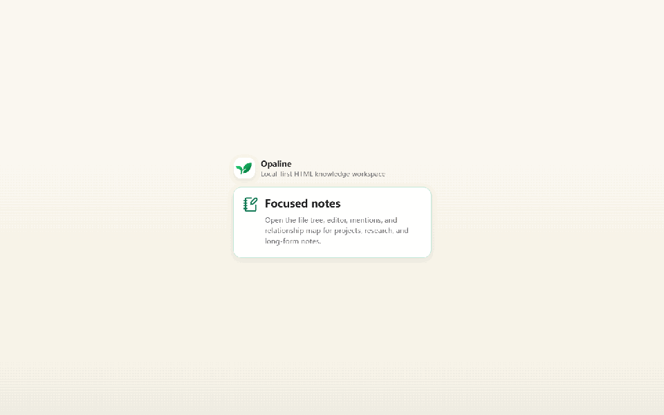

Opaline 中文入口
一个以干净 HTML 为原生笔记格式的本地优先知识工作台。
公开 alpha：Opaline 适合测试、个人试用和早期反馈，但还不是稳定日用版本。当前主要开发和验证环境是 Windows；macOS 安装包应在 macOS 上构建和测试。
发布与社区文档：构建与发布说明、数据与隐私、更新记录、贡献指南、安全政策。
Opaline 的核心想法是：笔记应该以干净的本地 HTML 保存，因此每篇笔记从一开始就是可阅读的文档、可发布的网页、也可以成为 AI 辅助检索和整理的结构化知识源。
预览

文档导航
拆分文档现已提供完整中英双语版本。中文版为全中文浏览，英文版保留完整技术细节。每页内可互相切换。
- 文档路口页
- 中文 Markdown README
- English Markdown README
- English README
- 愿景和定位 · Vision
- HTML 格式和多语言支持 · HTML Format
- 存储模型和架构 · Storage and Architecture
- 搜索、AI 和发布 · Search, AI, and Publish
- 链接规则 · Link Rules
- 路线图和暂不做的事情 · Roadmap
- 构建与发布说明 · 数据与隐私
一句话定位
Opaline 先不是论坛，也不是平台，而是一个能产生高质量、可发布、可 AI 检索 HTML 知识文件的本地工具。
第一阶段闭环
说出来 -> 自动记录 -> 存得住 -> 找得到 -> 连得上 -> 以后能发布为什么是 HTML
- 不用 Opaline，也能用浏览器打开。
- 天然适合发布成网页。
- 比 Markdown 更适合富文档结构。
- 可以保留块、概念、引用、语言等语义信息。
- 适合未来做选中文字搜索、概念解释和带引用的 AI 问答。
打开 README 能不能跳转
如果你打开的是 README.html，页面里的链接可以直接跳转到拆分文档。
如果你打开的是 README.md，它是 GitHub/代码仓库入口，只能显示链接，需要点击后跳转，不会自动重定向。
当前产品闭环
- 启动时自动初始化默认工作区：系统文档目录下的
Opaline文件夹。 - 初始页当前只保留“认真记记”，进入专注的三栏知识工作台。
- “认真记记”进入专注的三栏知识工作台。
- 早期“随便记记 / Today”入口在公开 alpha 中暂时隐藏，优先打磨专注知识工作台。
- 认真工作台包含左侧快捷栏、可折叠文件栏、主 HTML 编辑器、可折叠右侧信息栏和小型关系图预览。
- 设置页集中管理工作区位置、AI provider、API 地址、模型、API Key、模型测试、模型抓取，以及扩展组件与活组件策略。
- 更改工作区位置会被记住；后续需要补“迁移原工作区文件”的确认流程。
当前项目状态
当前项目已经不是纯构思或脚手架，已经有第一版可运行的桌面闭环。
- Tauri + React + Tiptap 桌面应用壳。
- 默认工作区自动初始化到系统文档目录下的
Opaline文件夹。 - 本地 HTML 笔记可以创建、读取、编辑、保存和自动保存。
- 仍可创建日记；早期“随便记记 / Today”入口在公开 alpha 中暂时隐藏。
- AI 设置支持 provider、自定义 API 地址、模型名、API Key、显式保存、测试模型和抓取模型。
- 已有 Opaline HTML Profile 的基础清洗、解析和测试。
- 轻量文档样式系统支持正文、标题、标注块和代码块，可设置字体族、字号和颜色。
- 编辑命令层已经接入工具栏操作，并为未来 AI 编辑流程保留同一套入口。
- AI 编辑工具协议已经包含命令 schema、权限元数据、预览元数据、历史快照钩子和回滚钩子。
- SQLite 已开始参与搜索和元数据管理方向。
- 已梳理普通
<a>、标题快捷链接、块链接、谁提到本篇、本篇关联和断链规则。 - 关系数据模型和关系图已经区分文件级、标题级、块级、概念级关系。
- 编辑器可以复制当前块链接，也可以从当前笔记中选择标题或块并插入稳定 ID 链接。
- 已加入扩展组件设置：扩展保护模式、扩展安装情况、刷新按钮，以及打开
.opaline/plugins扩展文件夹的入口。 <opaline-widget>可以保存内置组件，也可以声明已安装扩展提供的组件，例如network-status。笔记只保存type、target、endpoint、refresh等参数；脚本放在工作区扩展文件夹里。<opaline-script>已作为实验性脚本笔记加入；在设置里启用后会在 Opaline 内运行 JS，并可通过opaline.render()更新卡片输出、通过opaline.net.fetch()请求 HTTP/HTTPS 接口。- 编辑器支持 callout、双栏、对照、旁注、折叠块、表格、任务列表、图片、嵌入、数学公式和 Mermaid 图表。
- 编辑器右键菜单已经把常用格式、段落、H1-H6 标题、插入和剪贴板操作收进分层菜单。
- 左侧文件区右键菜单支持打开、创建副本、收藏、复制路径和打开历史版本。
- 内置本地笔记历史会把 HTML 快照保存到工作区元数据中。它不是 Git，不要求用户安装 Git，默认保留最近 30 天，恢复前必须先预览和确认。
- “认真记记”开始形成专注知识工作台：左侧快捷栏、文件栏、主编辑器、右侧检查器、左右栏折叠、小型关系图预览和完整关系视图；完整关系视图已有当前笔记关联范围和边详情。
- 设置页已有手动检查更新入口；公开更新分发还需要真实更新源、签名密钥和 release 资产。
仍然粗糙的地方：工作区迁移还没做，从选中文字创建概念级关系的普通用户交互还没做，文件操作还需要继续打磨，公开更新分发还没配置，HTML 原生交互块还需要继续打磨。
已知残留问题：块链接能打开目标笔记并滚动到目标块，但目标块的可视高亮在桌面编辑器里仍不稳定，当前可能看不到，需要后续单独修。
HTML 原生差异点
- 活组件 / Web Component：设置页保留内置组件和实验性脚本笔记开关，第三方组件改为从
.opaline/plugins/<extension-id>/读取。扩展manifest.json把network-status等组件类型映射到脚本文件；笔记只保存<opaline-widget type="network-status" target="192.168.1.1" endpoint="/status">这样的参数声明。 - DOM 级原子链接：标题、段落、表格、引用块等保留
data-opaline-block-id，编辑器提供复制当前块链接和插入标题/块链接的入口。 - 动态关系图：关系图区分文件、标题、块、概念关系，可以聚焦当前笔记关联范围，并点击边查看关系详情。
- 文档样式：笔记可以保存一个受控的
data-opaline-theme样式块，用于正文、标题、标注块和代码块，而不是在文档里散落不稳定的内联样式。 - 命令驱动编辑：工具栏操作已经走编辑命令层，未来 AI 操作计划可以调用同一套安全操作。
当前实施步骤
- 继续打磨“认真记记”的专注工作区，让文件栏、侧栏、编辑器和右侧信息区更统一。
- 补工作区迁移：用户更改位置时，可选择复制或移动原工作区文件。
- 继续打磨文件右键菜单和历史版本控制，后续补 7 / 30 / 90 天、永久保留、空间上限等保留策略。
- 继续改进关系图视图：在当前关联范围和边详情基础上，补更好的布局、边到具体目标的导航和保存过滤预设。
- 给普通用户补上从编辑器右键创建概念级关系，以及跨笔记选择标题/块目标的交互。
- 继续强化 HTML 原生交互块，让双栏、旁注、标注、嵌入、折叠块像界面能力，而不是隐藏标签。
- 把 AI 生成的操作计划接入可预览、需确认的编辑流程。
- 公开分发更新前，配置 GitHub 更新源、updater 签名密钥和 release 资产。
- 继续用可靠 parser 和测试加固 Opaline HTML Profile。
- 深化 SQLite FTS 搜索、元数据扫描、提及关系和断链修复。
- 增加带来源的本地笔记 AI 检索，先展示命中的笔记和片段，再生成回答。
- 增加明确的 AI 笔记操作：总结、提取标签、建议链接、拆分长笔记、生成大纲。
- 后续再做静态发布和公开笔记的读者选中概念搜索。